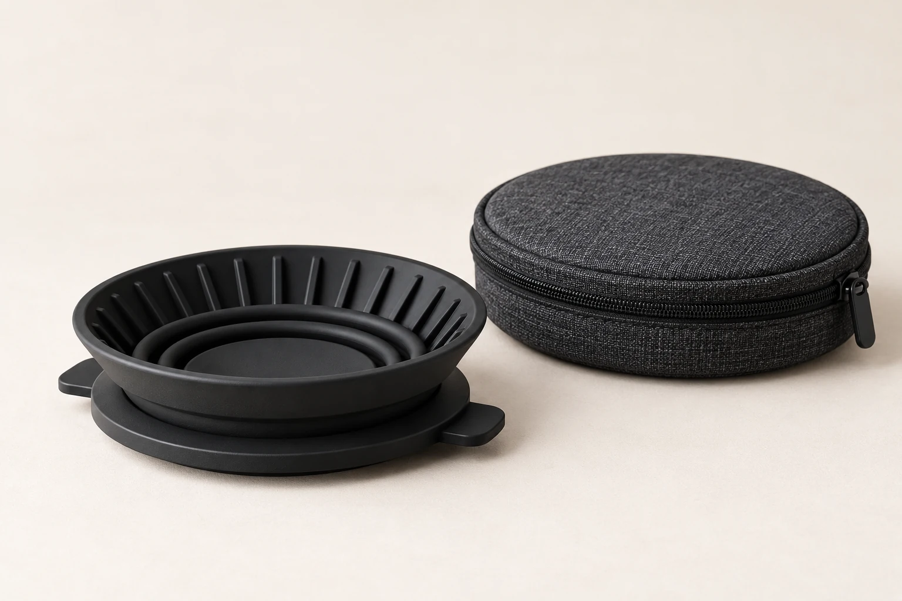

一杯の時間を、持ち運ぶ。
どこへでも、
いつもの一杯を。

NOMA DRIP器具本体・収納ケース / ¥3,960税込参考価格
持ち物を整える一杯分を、
持ち出そう。
本体とケースだけでは、まだ途中。
いつもの道具も、忘れずに。
NOMA DRIPのかたち
しまうとき。
淹れるとき。
低くたたんだ姿と、広げた姿。
同じ道具を、並べて確かめる。
形状を説明するコンセプト画像です。実際の作動を示す連続写真や、収納性能・マグ適合の実証ではありません。

抽出場面のイメージ
場所が変わっても、
淹れる手順は、いつものように。
旅先の窓辺でも、休日のベランダでも。
手を動かす時間から、一杯を楽しむ。
1開いて、安定した場所へ。＋
平らなテーブルに安定したマグを置き、器具を広げて載せる想定です。傾きやぐらつきがないことを確かめます。
2フィルターと粉を、用意する。＋
器具の形に合う紙フィルターをセットし、お好みのコーヒー粉を入れます。適合型番や抽出レシピは設定していません。
3少しずつ注いで、待つ。＋
お湯を少量ずつ注ぎ、あふれないよう様子を見る設計イメージです。熱いお湯に注意し、使い終えたら十分に冷ましてから洗い、乾かします。
架空製品の使い方の想定です。マグとの適合、固定の安全性、素材・耐熱温度は未検証です。
使い方と注意を詳しくコンセプト仕様
道具のことを、
確かめる。
架空製品のコンセプト仕様です。
実測値・試験結果ではありません。
- 製品名
- NOMA DRIP
- 用途
- 持ち運び用折りたたみドリップ器具
- カラー
- マットブラック
- セット内容
- 器具本体・収納ケース
- 抽出方式
- 紙フィルター式 / 1杯用を想定
- 別途必要なもの
- 形に合う紙フィルター、コーヒー粉、お湯、安定したマグ、ケトル
- 素材・寸法
- 検討中（コンセプト段階）
- 参考価格
- ¥3,960（税込）
次の一杯は、
どこで淹れよう。
NOMA DRIP / 収納ケース付き
架空プロダクトの購入デモです。確認画面まで体験できます。実際の注文・決済は行わず、氏名や住所などの個人情報も入力しません。
このサイトのデモについて気になること。
実際に購入できますか？
購入できません。NOMA DRIPはポートフォリオ用に設定した架空製品です。「デモ購入」は、選択内容を確認する画面までの体験で終了します。
紙フィルターは付属しますか？
付属しない設定です。コンセプトでは、器具の形に合う紙フィルターを別途用意する想定です。適合型番は設定していません。
どんなマグでも使えますか？
すべてのマグへの対応は想定していません。実製品では口径や安定性の検証が必要です。このサイトでは、対応寸法や安全性の確認は行っていません。
お手入れはどうしますか？
十分に冷めてから、やわらかいスポンジで洗い、乾燥させてケースへ戻す設計イメージです。食器洗浄機への対応や耐熱温度は未設定です。
写真の風景や製品は実在しますか？
写真は架空の製品や利用シーンを表現したイメージです。実在の製品、場所、販売実績、利用者の体験を示すものではありません。